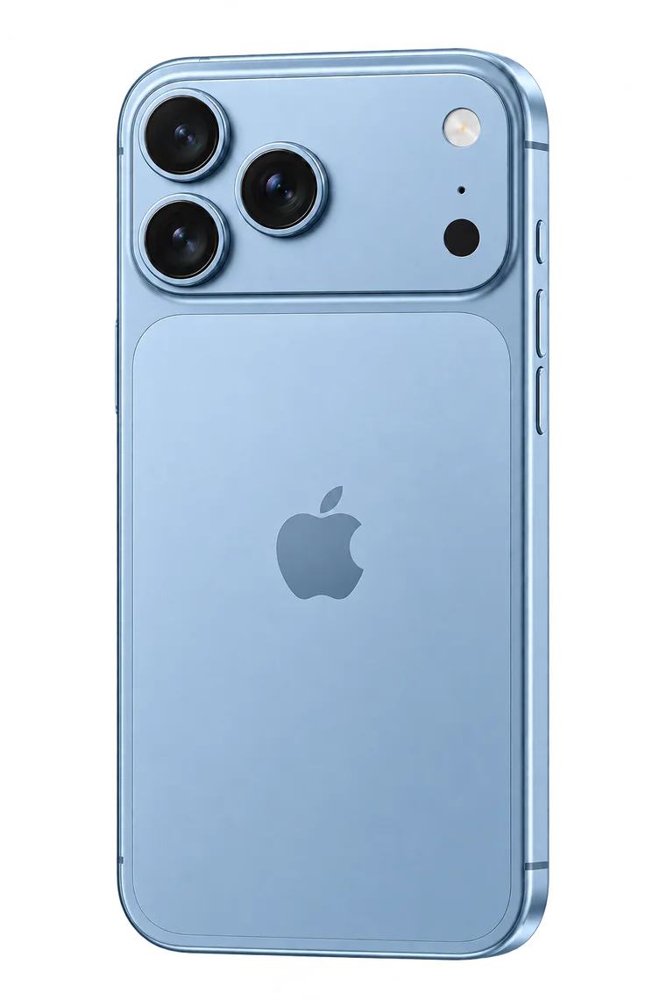
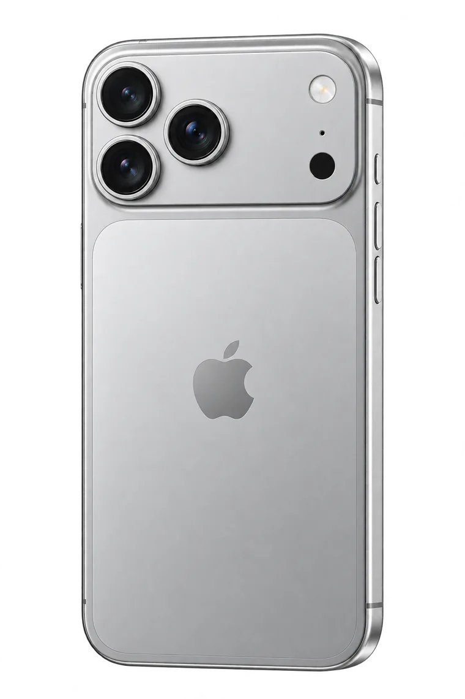

Seu próximo iPhone
Consulte modelos, capacidades e opções com a equipe.
Consultar Seu próximo iPhoneFátima · Fortaleza
Da sua primeira pergunta ao próximo aparelho. Fale diretamente com a FG Store no Fátima.

01 · A loja
A FG Store iPhones possui endereço e telefone comercial no Google Maps. Esta direção visual é uma proposta: o Instagram e a identidade oficial ainda precisam ser confirmados pela empresa.
Conhecer o perfil no Google Maps02 · Descoberta
O catálogo muda.
As opções atuais você consulta
diretamente com a loja.
Consulte modelos, capacidades e opções com a equipe.
Consultar Seu próximo iPhoneConte como usa o aparelho para conversar sobre as alternativas.
Consultar Sua escolhaConfirme a disponibilidade e o horário antes de ir à loja.
Consultar Sua visita03 · Fontes que você pode conferir
Confira as informações públicas da loja e tire suas dúvidas no canal comercial. Modelos, disponibilidade e condições são confirmados no atendimento.
04 · Um estudo de forma
Uma exploração visual de materiais e luz. A ilustração é conceitual; cores e modelos vendidos pela loja devem ser consultados no atendimento.
Estudo em prata

05 · Caderno visual
Arte conceitual própria.
Perfil público da loja
no Google Maps.
Fátima · Fortaleza
Fortaleza, CE · 60040-530. Endereço e telefone publicados no Google Maps; confirme atendimento antes de visitar.